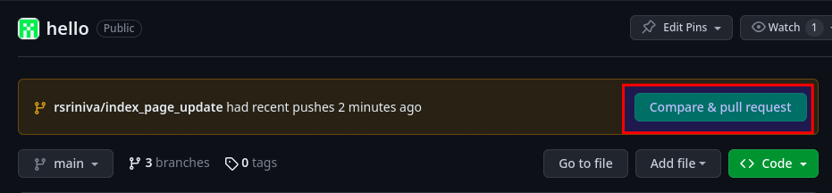
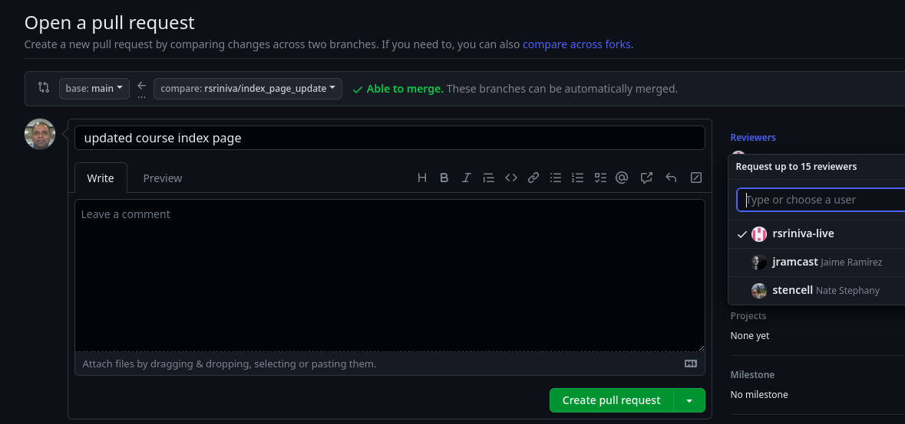
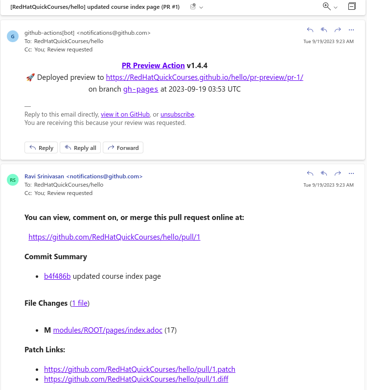
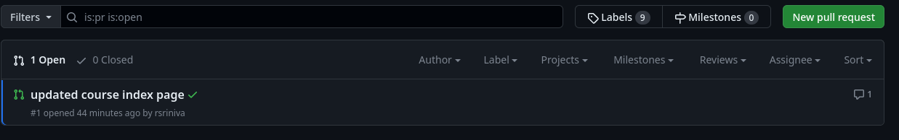
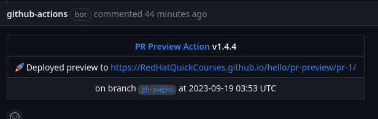
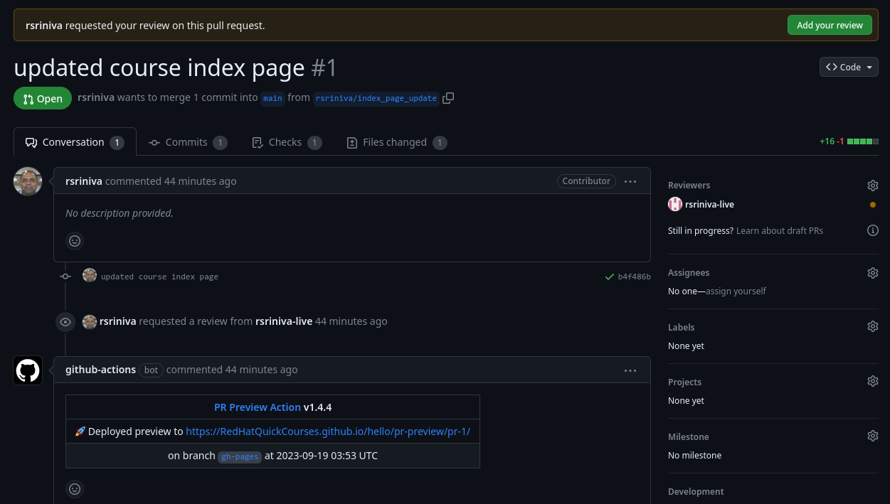
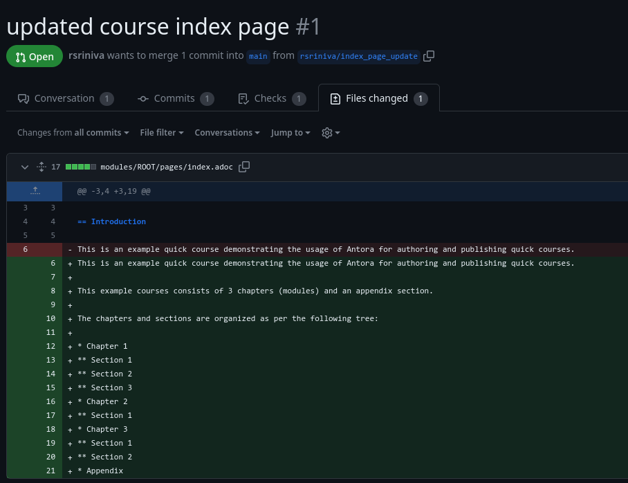
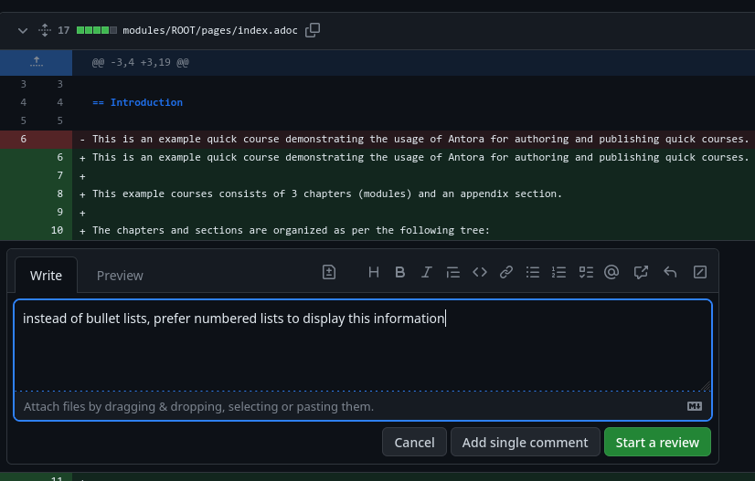
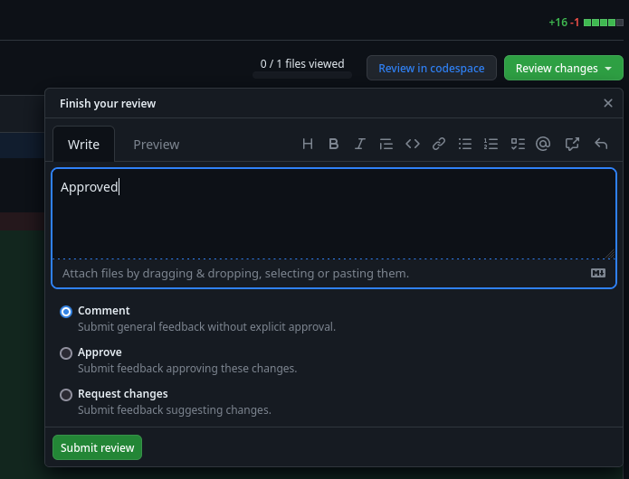

5. Content Review
After you have pushed your local branch changes to GitHub, it is a good practice to get your changes reviewed by someone in the PTL team before the changes are actually published on the website.
Create Pull Request (PR)
-
Navigate to the quick course GitHub repository using a web browser. You should see a notification that a new branch was pushed, and you will be prompted to create a Pull Request (PR).
Figure 1. New Branch notification in GitHubClick the green
Compare & pull requestbutton to create a pull request. -
Select a reviewer (most often someone from the PTL team) from the
Reviewersfield. Leave a descriptive comment about the change and ensure that you have selectedmainas the branch you want to merge your changes into.Figure 2. Create a pull request (PR)Click the
Create pull requestbutton to create the pull request. Your PR will be reviewed and you will receive an email notification informing you if the PR was approved, or if further changes are required.
Pull Request Review
| This section is relevant only to content reviewers who have permissions to review and approve pull requests (PRs). |
-
Reviewers will be notified by email if and when a PR is ready for review.
Figure 3. PR review email notificationReviewers can also view the PRs pending review on the GitHub
Pull requestspage of the course repository.Figure 4. List of PRs -
Click and open the PR you want to review. You can preview the rendered HTML content with the proposed changes in the PR by clicking on the link next to
Deployed preview toline.Figure 5. Preview HTML rendering -
To leave review comments, click on the
Add your reviewbuttonFigure 6. Add Review comments to PR -
You will now be shown the
Files changedtab where you should see the detailed list of files that have been changed or added, and the actual textual changes in them.Figure 7. Diff of changes in PRYou can now click on any of the
+or-symbols next to the line numbers in the left side of the text and leave review comments on a line by line basis.Figure 8. PR review commentsLeave as many comments as you wish for the original author of the PR.
-
After you have left review comments, you can either approve the PR, or request more changes from the author. Click the
Review changesbutton followed by selecting theApproveorRequest changesoption, and then clickingSubmit review.Figure 9. Approve PR or Request Changes